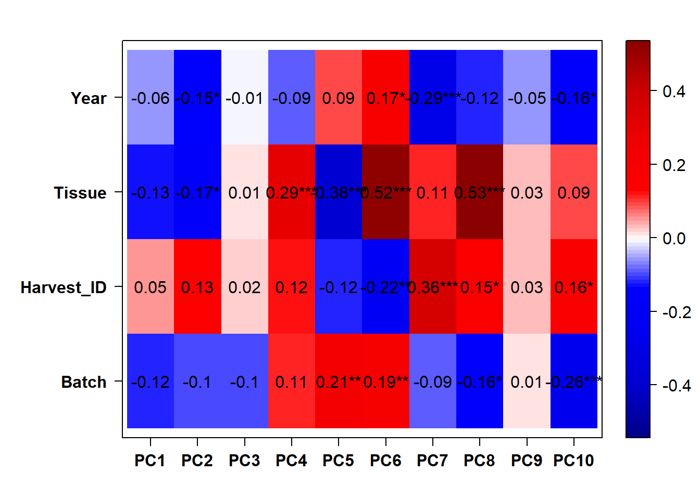
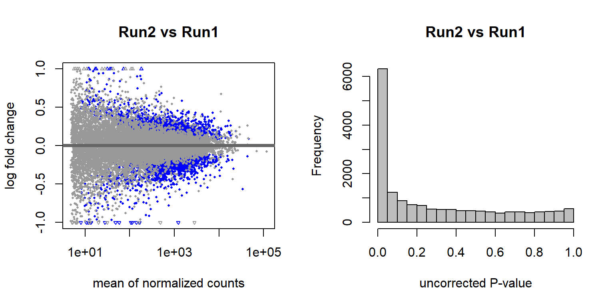
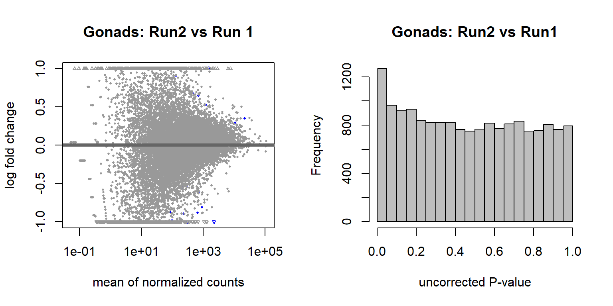

Gene Expression QC
For manuscript: Neurogenomic landscape of male cooperative behavior in a wild bird
Last Substantive Change October 2020
Last Knit “2022-05-24”
1 Sampling
There are a total of 186 sequenced samples, across 16 individuals and 9-12 Tissues per individual. Each individual’s tissue has a unique library prep. Four tissues from the four individuals in the 2015 pilot study were repeated with fresh library preps and run alongside the new samples. Individuals/libraries were randomized across Batchs.
| PFT1 | PFT10 | PFT11 | PFT12 | PFT2 | PFT3 | PFT4 | PFT5 | PFT6 | PFT7 | PFT8 | PFT9 | TF1 | TF2 | TT1 | TT2 | |
|---|---|---|---|---|---|---|---|---|---|---|---|---|---|---|---|---|
| pilot | 0 | 0 | 0 | 0 | 0 | 0 | 0 | 0 | 0 | 0 | 0 | 0 | 9 | 6 | 8 | 7 |
| run1 | 5 | 7 | 6 | 8 | 8 | 3 | 8 | 7 | 8 | 7 | 5 | 5 | 1 | 0 | 0 | 0 |
| run2 | 7 | 5 | 6 | 4 | 4 | 9 | 4 | 5 | 4 | 5 | 7 | 7 | 3 | 3 | 3 | 2 |
| AH | AI | BSTm | GCT | GON | ICO | LS | PIT | POM | PVN | TNA | VMH | |
|---|---|---|---|---|---|---|---|---|---|---|---|---|
| pilot | 0 | 3 | 4 | 1 | 4 | 3 | 3 | 0 | 4 | 0 | 4 | 4 |
| run1 | 0 | 11 | 0 | 8 | 12 | 6 | 0 | 8 | 12 | 0 | 10 | 11 |
| run2 | 12 | 1 | 12 | 4 | 3 | 6 | 12 | 4 | 3 | 12 | 5 | 4 |
| floater | territorial | |
|---|---|---|
| pilot | 15 | 15 |
| run1 | 30 | 48 |
| run2 | 37 | 41 |
The plot below is just a quick check to see if any of the batches/samples stick out in terms of read depth. Gross differences in the number of reads in each batch might indicate a problem with comparing between them. 
##
## Wilcoxon rank sum test with continuity correction
##
## data: files_key$Number.of.Reads[files_key$Batch == "run1"] and files_key$Number.of.Reads[files_key$Batch == "run2"]
## W = 3976, p-value = 0.0009372
## alternative hypothesis: true location shift is not equal to 02 Mapping Results
Briefly, I used STAR to map the reads to the Pipra filicauda Refseq Genome V1 GCF_003945595.1. See the mapping script on the github repository
The figure below shows the results of the summary statistics for each library

The above plots identify 3 samples that mapped poorly, and these samples also had low RNA concentrations. Samples PFT3_AI_run2, PFT6_AH_run2, PFT9_ICO_run2 will be excluded from further analyses. Then genes with an average count of greater than or equal to 5 will be excluded from downstream analysis.
3 Exploration of the expression data
These data have been filtered a little bit already to exclude individuals with low read mapping, and genes with a mean read count of <5.
Here I will document gene read depth variation across tissues.

3.1 Batch differences and outlier detection
The primary purpose of these analyses is to determine:
Do Year and Batch influence need to be accounted for?
Whether there is a significant library effect - as per the replicated samples.
Whether there are any significantly outlying samples.
3.1.1 All Samples PCA and WGCNA
Here I will use PCA outliers and WGCNA outliers to guide initial filtering.
## [1] "Batch"
## [1] "Harvest_ID"
## [1] "Tissue"
## [1] "Year"
There appears to be some variation explained by Year and Batch variables.
## [1] "Batch" "Tissue" "Status" "Year" "Run1" "Run2" "AH" "AI"
## [9] "BSTm" "GCT" "ICO" "LS" "PIT" "POM" "PVN" "TNA"
## [17] "VMH" "yr2017" "yr2018"
3.1.2 Year and Batch Effects
The DESeq design for the full dataset here is ~ Year + Batch + ind.n + Tissue. This includes the replicate samples separated out.
3.1.2.1 Batch Effects
There are 4577 genes with an adjusted p-val of <0.05, and therefore differentially expressed with respect to sequencing run1 and run2 in 2019. Approximately equal numbers of genes were differentially expressed up or down.


3.1.2.2 Year effects


## (polygon[GRID.polygon.509], polygon[GRID.polygon.510], polygon[GRID.polygon.511], polygon[GRID.polygon.512], text[GRID.text.513], text[GRID.text.514], text[GRID.text.515], text[GRID.text.516], text[GRID.text.517])3.1.2.2.1 Gonads only
Let’s look for Batch and year effects just in run 1 vs run 2, and only in the a given tissue. I’m just going to use the testes (GON) as a test.

## [1] "Batch"
## [1] "Year"

Let’s have a look at the plots for the most significant gene.
And now let’s explore Year in the Gonads.
An example top gene 
And within the Gonads, which of the DEGs associated with Year and Batch are shared?
## (polygon[GRID.polygon.863], polygon[GRID.polygon.864], polygon[GRID.polygon.865], polygon[GRID.polygon.866], text[GRID.text.867], text[GRID.text.868], text[GRID.text.869], text[GRID.text.870], text[GRID.text.871])There is colinearity between Batch and Year in both the full dataset and the single tissue test dataset. All subsequent models will include a composite variable for Year and Batch (Year_Batch) to account for these effects in subsequent analyses.
3.1.2.2.2 Random Variable
Create a random variable that has the same proportions as Batch and ensure that the p-value distribution does not have an over-abundance of values <0.05, which suggests that the samples were drawn from different distributions. This is essentially a test to ensure that what we are seeing with respect to Batch (and Year) above isn’t just random noise.
#create a random variable and test against that:
set.seed(1283)
x<- sample(LETTERS[1:3], 183, replace=TRUE, prob=c(0.43,0.41,0.16))
dd$random_variable<- as.factor(x)
design(dd)<- formula(~random_variable)
dd<- DESeq(dd)
testres<- results(dd)
par(mfrow=c(1,2))
plotMA(testres, ylim=c(-1,1))
hist(testres$pvalue, breaks=20, col="grey", main="p-value distribution from DE on random variable")
These results suggest that these few differentially expressed genes are drawn from the same distribution, so the results we saw previously are probably real.
3.2 Replicate Samples
Now, let’s see how different the samples from 2015 are from their replicates on the latest run. These were sequencing replicates from the 2015 libraries.

## null device
## 1Now let’s use ordination (1) and sample distance (2) to see how different they are from eachother.

Let’s see how the expression differs between replicates for the top 20 most expressed genes. These show that expression is always in the same direction, and usually very close in value.
Now, take sample-sample distance and cluster. These show that replicates cluster together, and then tissues.

There are 64 differentially expressed genes between replicates. We appear to have broad batch effects (with respect to Flow Cell (Batch) and with respect to Year sampled), but also there is not really a strong replicate effect as shown.
In order to maximise sample size, and to maximise the number of individuals in the pilot batch group, I will take the first (pilot) instance of each replicate to include in further analyses. In addition, all subsequent analyses will include include the batch variables where necessary.
4 Finalizing dataset
Finally, using the replicate removed dataset we will do final PCA explorations of brain and pituitary data. Note the Gonads are above with the replicate samples.
4.1 WGCNA outlier dendrograms
## png
## 24.2 Brain
This PCA figure is annotated with potential outliers based on the above per-tissue WGCNA, and a draft version of the below PCA plot. Outliers were selected in the WGCNA plot based on branch length (sample distance) from main group and the number of samples. Similar logic applied to the PCA.
## [1] "Tissue"
## [1] "Year_Batch"Still seeing Year and Batch effects in the whole brain dataset.
4.3 Pituitary

4.4 Confound between tissue and batch
On discussions with Chris, it is possible the number of genes we are seeing as differentially expressed in the main analysis is owing to a confound between tissue and batch, as a few tissues are sequenced exclusively on a single batch. To explore this, we can see whether the DEGs for batch are the same as those for tissue differences. Tissue will be AH, which only has run 2 and PIT, which was compared at Run 1 vs Run 2
| AH | PIT | |
|---|---|---|
| run1 | 0 | 8 |
| run2 | 11 | 4 |

## (polygon[GRID.polygon.1475], polygon[GRID.polygon.1476], polygon[GRID.polygon.1477], polygon[GRID.polygon.1478], text[GRID.text.1479], text[GRID.text.1480], text[GRID.text.1481], text[GRID.text.1482], text[GRID.text.1483])
## (polygon[GRID.polygon.1484], polygon[GRID.polygon.1485], polygon[GRID.polygon.1486], polygon[GRID.polygon.1487], polygon[GRID.polygon.1488], polygon[GRID.polygon.1489], text[GRID.text.1490], text[GRID.text.1491], text[GRID.text.1492], text[GRID.text.1493], text[GRID.text.1494], text[GRID.text.1495], text[GRID.text.1496], text[GRID.text.1497], text[GRID.text.1498], text[GRID.text.1499])However, when you run PIT on its own with respect to batch there are 2441 differentially expressed genes. Seems like tissues need to be kept separate to remove this confound.
The next analysis I conduct will be the differential expression analyses in DESeq. See menus for these and more analyses.
## R version 4.0.2 (2020-06-22)
## Platform: x86_64-w64-mingw32/x64 (64-bit)
## Running under: Windows 10 x64 (build 19044)
##
## Matrix products: default
##
## locale:
## [1] LC_COLLATE=English_Australia.1252 LC_CTYPE=English_Australia.1252
## [3] LC_MONETARY=English_Australia.1252 LC_NUMERIC=C
## [5] LC_TIME=English_Australia.1252
##
## attached base packages:
## [1] grid parallel stats4 stats graphics grDevices utils
## [8] datasets methods base
##
## other attached packages:
## [1] wesanderson_0.3.6 VennDiagram_1.6.20
## [3] futile.logger_1.4.3 kableExtra_1.3.1
## [5] WGCNA_1.69 fastcluster_1.1.25
## [7] dynamicTreeCut_1.63-1 pheatmap_1.0.12
## [9] lubridate_1.8.0 DESeq2_1.28.1
## [11] SummarizedExperiment_1.18.1 DelayedArray_0.14.0
## [13] matrixStats_0.56.0 Biobase_2.48.0
## [15] GenomicRanges_1.40.0 GenomeInfoDb_1.24.0
## [17] IRanges_2.22.2 S4Vectors_0.26.1
## [19] BiocGenerics_0.34.0 stringr_1.4.0
## [21] PCAtools_2.0.0 cowplot_1.0.0
## [23] lattice_0.20-41 ggrepel_0.8.2
## [25] ggplot2_3.3.5 reshape2_1.4.4
## [27] plyr_1.8.6
##
## loaded via a namespace (and not attached):
## [1] colorspace_1.4-1 ellipsis_0.3.2
## [3] htmlTable_2.0.1 XVector_0.28.0
## [5] base64enc_0.1-3 rstudioapi_0.13
## [7] farver_2.0.3 bit64_0.9-7
## [9] AnnotationDbi_1.50.0 fansi_0.4.1
## [11] xml2_1.3.2 codetools_0.2-16
## [13] splines_4.0.2 doParallel_1.0.15
## [15] impute_1.62.0 geneplotter_1.66.0
## [17] knitr_1.29 Formula_1.2-3
## [19] annotate_1.66.0 cluster_2.1.0
## [21] GO.db_3.11.4 png_0.1-7
## [23] compiler_4.0.2 httr_1.4.2
## [25] dqrng_0.2.1 backports_1.1.7
## [27] assertthat_0.2.1 Matrix_1.2-18
## [29] fastmap_1.1.0 limma_3.44.3
## [31] formatR_1.8 BiocSingular_1.4.0
## [33] acepack_1.4.1 htmltools_0.5.2
## [35] tools_4.0.2 rsvd_1.0.3
## [37] gtable_0.3.0 glue_1.5.1
## [39] GenomeInfoDbData_1.2.3 dplyr_1.0.7
## [41] Rcpp_1.0.7 jquerylib_0.1.4
## [43] vctrs_0.3.8 preprocessCore_1.50.0
## [45] iterators_1.0.12 DelayedMatrixStats_1.10.0
## [47] xfun_0.29 rvest_1.0.2
## [49] lifecycle_1.0.1 irlba_2.3.3
## [51] XML_3.99-0.5 zlibbioc_1.34.0
## [53] scales_1.1.1 ragg_1.2.1
## [55] lambda.r_1.2.4 RColorBrewer_1.1-2
## [57] yaml_2.2.1 memoise_1.1.0
## [59] gridExtra_2.3 rpart_4.1-15
## [61] latticeExtra_0.6-29 stringi_1.4.6
## [63] RSQLite_2.2.0 highr_0.8
## [65] genefilter_1.70.0 foreach_1.5.0
## [67] checkmate_2.0.0 BiocParallel_1.22.0
## [69] systemfonts_1.0.3 rlang_0.4.12
## [71] pkgconfig_2.0.3 bitops_1.0-6
## [73] evaluate_0.14 purrr_0.3.4
## [75] labeling_0.3 htmlwidgets_1.5.3
## [77] bit_4.0.4 tidyselect_1.1.0
## [79] magrittr_2.0.1 R6_2.4.1
## [81] generics_0.0.2 Hmisc_4.4-0
## [83] DBI_1.1.0 pillar_1.6.4
## [85] foreign_0.8-80 withr_2.4.3
## [87] survival_3.2-3 RCurl_1.98-1.2
## [89] nnet_7.3-14 tibble_3.1.6
## [91] crayon_1.4.2 futile.options_1.0.1
## [93] utf8_1.1.4 rmarkdown_2.11
## [95] jpeg_0.1-8.1 locfit_1.5-9.4
## [97] data.table_1.13.0 blob_1.2.1
## [99] webshot_0.5.2 digest_0.6.25
## [101] xtable_1.8-4 textshaping_0.3.6
## [103] munsell_0.5.0 viridisLite_0.4.0